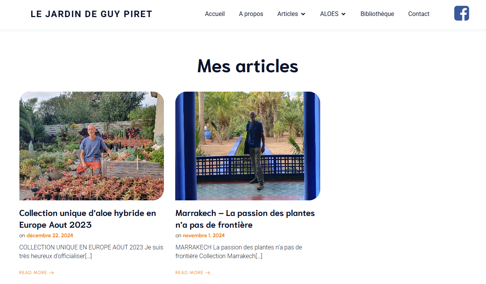

Créer un site web sur mesure
Projet personnel réalisé pour une connaissance. Guy Piret communiquait uniquement via sa page Facebook lorsqu'il m'a fait part de son idée d'un site « style blog », sur lequel il pourrait poster ses propres articles.

Le choix du CMS
Étant donné la demande particulière de Guy Piret, le choix de la plateforme de développement du site était restreint. J'ai finalement choisi WordPress pour la simplicité de ses outils de création d'articles.
Ci-dessous, la page consacrée aux articles écrits par Guy Piret.

Bilan
Ce projet, toujours d'actualité puisque j'en assure la maintenance, m'a permis d'améliorer considérablement ma capacité à comprendre et échanger sur les attentes d'un client. Les imprévus rencontrés m'ont également rappelé qu'une organisation rigoureuse est essentielle au bon déroulement d'un projet de cette envergure.